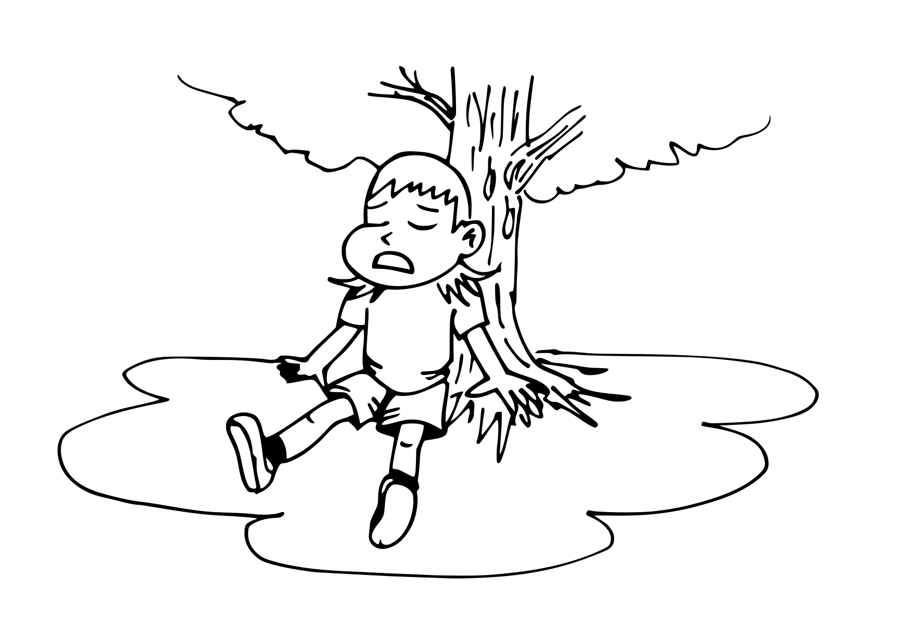

La Philosophie du Mouvement des Flemmards.
L'Art de la Paresse Consciente
La paresse consciente est le principe fondateur de notre mouvement. Il ne s'agit pas de simplement ne rien faire, mais de choisir délibérément de ralentir et de prendre du temps pour soi. En pratiquant la paresse consciente, nous apprenons à écouter notre corps et notre esprit, à reconnaître nos besoins de repos et à y répondre sans culpabilité. Cette approche nous permet de retrouver notre énergie, de réduire le stress et d'améliorer notre bien-être général.
Les Bienfaits de la Paresse
- Réduction du stress : Prendre le temps de se détendre permet de diminuer les niveaux de stress et d'anxiété, contribuant ainsi à une meilleure santé mentale.
- Créativité accrue : Le repos et la relaxation favorisent l'émergence de nouvelles idées et stimulent la créativité.
- Amélioration de la concentration : Les pauses régulières permettent de recharger nos batteries mentales, améliorant ainsi notre capacité à nous concentrer et à être plus productifs lorsque nous travaillons.
- Santé physique : Le repos adéquat est essentiel pour le bon fonctionnement de notre corps, réduisant les risques de maladies liées au stress et à la fatigue.
La Lenteur comme Mode de Vie
Contrairement à la croyance populaire, la paresse consciente n'est pas l'ennemie de la productivité. En fait, elle peut être son alliée la plus précieuse. En prenant des pauses régulières et en accordant de l'importance au repos, nous augmentons notre capacité à être productifs de manière plus efficace et plus durable. La clé réside dans l'équilibre entre travail et repos, où chaque période de repos permet de revenir aux tâches avec plus de vigueur et de clarté d'esprit.
Une Communauté de Paresseux Éclairés
La Fédération Française des Flemmards n'est pas seulement un refuge pour les adeptes du repos, mais aussi une communauté de personnes partageant les mêmes valeurs et la même vision de la vie. Ensemble, nous promouvons un mode de vie où la détente et le bien-être sont prioritaires. Nous échangeons des astuces, organisons des événements et soutenons chacun dans la quête d'un équilibre harmonieux entre activité et repos.
Rejoignez le Mouvement
Nous invitons chacun à embrasser cette philosophie et à découvrir les bienfaits d'une vie moins stressante et plus équilibrée. Que vous soyez un flemmard de longue date ou que vous cherchiez à intégrer plus de repos dans votre quotidien, la Fédération Française des Flemmards est là pour vous guider et vous soutenir.
Ensemble, célébrons l'art de la paresse et montrons que prendre soin de soi est la clé d'une vie heureuse et épanouie.